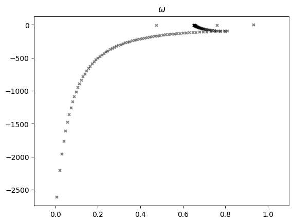
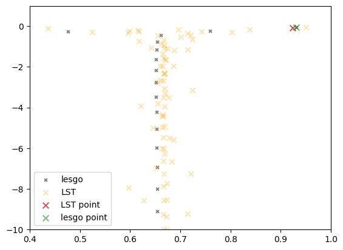
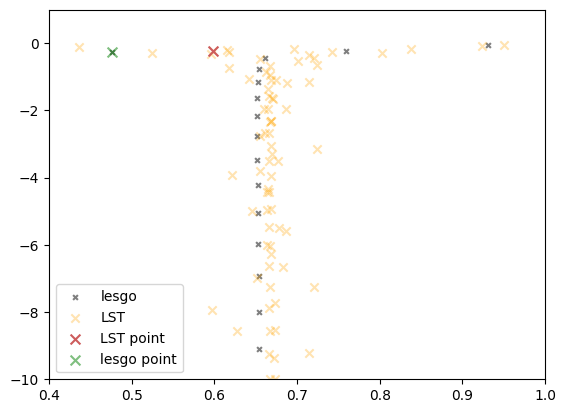
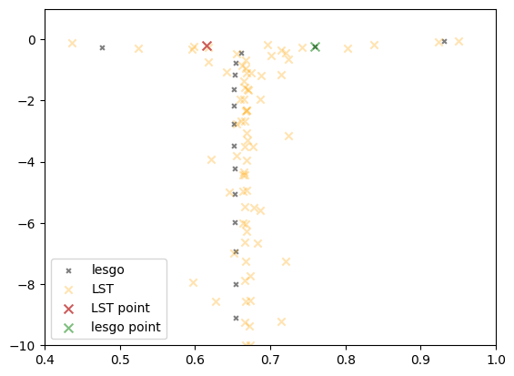

import numpy as np
import matplotlib.pyplot as plt
from turb.lesgo_utils import lesgo_data, read_array_from_file, write_array_to_file
from pyutils import plot_utils as pltutils
from pyutils.cartesian import meshgrid
from scipy.fft import fft2, ifft2, fft, ifft
from matplotlib import colors, cm
from datetime import datetime
date_marker = datetime.today().strftime('%Y_%m_%d')
---------------------------------------------------------------------------
ModuleNotFoundError Traceback (most recent call last)
Cell In[1], line 3
1 import numpy as np
2 import matplotlib.pyplot as plt
----> 3 from turb.lesgo_utils import lesgo_data, read_array_from_file, write_array_to_file
4 from pyutils import plot_utils as pltutils
5 from pyutils.cartesian import meshgrid
ModuleNotFoundError: No module named 'turb'
root_dir = '/home/zyou6474/Projects/lesgo_adjoint_tutorial_bundle/tests/6_LST'
dims = [16, 16, 128]
domain = [2*np.pi, np.pi, 1]
ldata = lesgo_data(domain, dims, root_dir, ntheta=3)
t_total = 100000
tstep = 10000
tt = np.arange(0, t_total+1, tstep)
# # Create config template
# ldata._read_lesgoconf('/home/zyou6474/Projects/lesgo_eri/src/lesgo.conf')
# ldata._write_conf('/home/zyou6474/Projects/ERI/notebooks/cases/LST/configs/config_LST_new.ini')
# Read template config
ldata._read_conf('/home/zyou6474/Projects/ERI/notebooks/cases/LST/configs/config_LST.ini')
# Use parabolic velocity profile as IC
xc, yc, zc = ldata.coords
xx, yy, zz = np.meshgrid(xc, yc, zc, indexing='ij')
ldata.data['u_ic'] = zz * (2-zz)
ldata.data['v_ic'] = zz * 0
ldata.data['w_ic'] = zz * 0
# Create single wavenumber theta in each layer as Initial Condition
# mesh = meshgrid(domain, dims)
thetaic_shape = dims*1
thetaic_shape.insert(0, dims[2])
thetaic_shape = tuple(thetaic_shape)
ldata.data['theta_IC'] = np.empty(shape = thetaic_shape)
for k in range(dims[2]):
ldata.data['theta_IC'][k] = 0
ldata.data['theta_IC'][k, :, :, k] = np.sin(xc)[:, np.newaxis] + yc[np.newaxis, :] *0
# Switch off Scalar source
ldata.config['SCALAR']['source_opt'] = '0'
ldata.config['SCALAR']['ntheta'] = f'{dims[2]}'
ldata._fnames(fmt_ntheta='%.3i')
ldata.write_inputs()
ldata._write_conf('/home/zyou6474/Projects/ERI/notebooks/cases/LST/configs/config_LST%s.ini' % date_marker)
write data into /home/zyou6474/Projects/lesgo_adjoint_tutorial_bundle/tests/6_LST/inputs/u_velocity.IC
write data into /home/zyou6474/Projects/lesgo_adjoint_tutorial_bundle/tests/6_LST/inputs/v_velocity.IC
write data into /home/zyou6474/Projects/lesgo_adjoint_tutorial_bundle/tests/6_LST/inputs/w_velocity.IC
write data into /home/zyou6474/Projects/lesgo_adjoint_tutorial_bundle/tests/6_LST/inputs/theta.001.IC
write data into /home/zyou6474/Projects/lesgo_adjoint_tutorial_bundle/tests/6_LST/inputs/theta.002.IC
write data into /home/zyou6474/Projects/lesgo_adjoint_tutorial_bundle/tests/6_LST/inputs/theta.003.IC
write data into /home/zyou6474/Projects/lesgo_adjoint_tutorial_bundle/tests/6_LST/inputs/theta.004.IC
write data into /home/zyou6474/Projects/lesgo_adjoint_tutorial_bundle/tests/6_LST/inputs/theta.005.IC
write data into /home/zyou6474/Projects/lesgo_adjoint_tutorial_bundle/tests/6_LST/inputs/theta.006.IC
write data into /home/zyou6474/Projects/lesgo_adjoint_tutorial_bundle/tests/6_LST/inputs/theta.007.IC
write data into /home/zyou6474/Projects/lesgo_adjoint_tutorial_bundle/tests/6_LST/inputs/theta.008.IC
write data into /home/zyou6474/Projects/lesgo_adjoint_tutorial_bundle/tests/6_LST/inputs/theta.009.IC
write data into /home/zyou6474/Projects/lesgo_adjoint_tutorial_bundle/tests/6_LST/inputs/theta.010.IC
write data into /home/zyou6474/Projects/lesgo_adjoint_tutorial_bundle/tests/6_LST/inputs/theta.011.IC
write data into /home/zyou6474/Projects/lesgo_adjoint_tutorial_bundle/tests/6_LST/inputs/theta.012.IC
write data into /home/zyou6474/Projects/lesgo_adjoint_tutorial_bundle/tests/6_LST/inputs/theta.013.IC
write data into /home/zyou6474/Projects/lesgo_adjoint_tutorial_bundle/tests/6_LST/inputs/theta.014.IC
write data into /home/zyou6474/Projects/lesgo_adjoint_tutorial_bundle/tests/6_LST/inputs/theta.015.IC
write data into /home/zyou6474/Projects/lesgo_adjoint_tutorial_bundle/tests/6_LST/inputs/theta.016.IC
write data into /home/zyou6474/Projects/lesgo_adjoint_tutorial_bundle/tests/6_LST/inputs/theta.017.IC
write data into /home/zyou6474/Projects/lesgo_adjoint_tutorial_bundle/tests/6_LST/inputs/theta.018.IC
write data into /home/zyou6474/Projects/lesgo_adjoint_tutorial_bundle/tests/6_LST/inputs/theta.019.IC
write data into /home/zyou6474/Projects/lesgo_adjoint_tutorial_bundle/tests/6_LST/inputs/theta.020.IC
write data into /home/zyou6474/Projects/lesgo_adjoint_tutorial_bundle/tests/6_LST/inputs/theta.021.IC
write data into /home/zyou6474/Projects/lesgo_adjoint_tutorial_bundle/tests/6_LST/inputs/theta.022.IC
write data into /home/zyou6474/Projects/lesgo_adjoint_tutorial_bundle/tests/6_LST/inputs/theta.023.IC
write data into /home/zyou6474/Projects/lesgo_adjoint_tutorial_bundle/tests/6_LST/inputs/theta.024.IC
write data into /home/zyou6474/Projects/lesgo_adjoint_tutorial_bundle/tests/6_LST/inputs/theta.025.IC
write data into /home/zyou6474/Projects/lesgo_adjoint_tutorial_bundle/tests/6_LST/inputs/theta.026.IC
write data into /home/zyou6474/Projects/lesgo_adjoint_tutorial_bundle/tests/6_LST/inputs/theta.027.IC
write data into /home/zyou6474/Projects/lesgo_adjoint_tutorial_bundle/tests/6_LST/inputs/theta.028.IC
write data into /home/zyou6474/Projects/lesgo_adjoint_tutorial_bundle/tests/6_LST/inputs/theta.029.IC
write data into /home/zyou6474/Projects/lesgo_adjoint_tutorial_bundle/tests/6_LST/inputs/theta.030.IC
write data into /home/zyou6474/Projects/lesgo_adjoint_tutorial_bundle/tests/6_LST/inputs/theta.031.IC
write data into /home/zyou6474/Projects/lesgo_adjoint_tutorial_bundle/tests/6_LST/inputs/theta.032.IC
write data into /home/zyou6474/Projects/lesgo_adjoint_tutorial_bundle/tests/6_LST/inputs/theta.033.IC
write data into /home/zyou6474/Projects/lesgo_adjoint_tutorial_bundle/tests/6_LST/inputs/theta.034.IC
write data into /home/zyou6474/Projects/lesgo_adjoint_tutorial_bundle/tests/6_LST/inputs/theta.035.IC
write data into /home/zyou6474/Projects/lesgo_adjoint_tutorial_bundle/tests/6_LST/inputs/theta.036.IC
write data into /home/zyou6474/Projects/lesgo_adjoint_tutorial_bundle/tests/6_LST/inputs/theta.037.IC
write data into /home/zyou6474/Projects/lesgo_adjoint_tutorial_bundle/tests/6_LST/inputs/theta.038.IC
write data into /home/zyou6474/Projects/lesgo_adjoint_tutorial_bundle/tests/6_LST/inputs/theta.039.IC
write data into /home/zyou6474/Projects/lesgo_adjoint_tutorial_bundle/tests/6_LST/inputs/theta.040.IC
write data into /home/zyou6474/Projects/lesgo_adjoint_tutorial_bundle/tests/6_LST/inputs/theta.041.IC
write data into /home/zyou6474/Projects/lesgo_adjoint_tutorial_bundle/tests/6_LST/inputs/theta.042.IC
write data into /home/zyou6474/Projects/lesgo_adjoint_tutorial_bundle/tests/6_LST/inputs/theta.043.IC
write data into /home/zyou6474/Projects/lesgo_adjoint_tutorial_bundle/tests/6_LST/inputs/theta.044.IC
write data into /home/zyou6474/Projects/lesgo_adjoint_tutorial_bundle/tests/6_LST/inputs/theta.045.IC
write data into /home/zyou6474/Projects/lesgo_adjoint_tutorial_bundle/tests/6_LST/inputs/theta.046.IC
write data into /home/zyou6474/Projects/lesgo_adjoint_tutorial_bundle/tests/6_LST/inputs/theta.047.IC
write data into /home/zyou6474/Projects/lesgo_adjoint_tutorial_bundle/tests/6_LST/inputs/theta.048.IC
write data into /home/zyou6474/Projects/lesgo_adjoint_tutorial_bundle/tests/6_LST/inputs/theta.049.IC
write data into /home/zyou6474/Projects/lesgo_adjoint_tutorial_bundle/tests/6_LST/inputs/theta.050.IC
write data into /home/zyou6474/Projects/lesgo_adjoint_tutorial_bundle/tests/6_LST/inputs/theta.051.IC
write data into /home/zyou6474/Projects/lesgo_adjoint_tutorial_bundle/tests/6_LST/inputs/theta.052.IC
write data into /home/zyou6474/Projects/lesgo_adjoint_tutorial_bundle/tests/6_LST/inputs/theta.053.IC
write data into /home/zyou6474/Projects/lesgo_adjoint_tutorial_bundle/tests/6_LST/inputs/theta.054.IC
write data into /home/zyou6474/Projects/lesgo_adjoint_tutorial_bundle/tests/6_LST/inputs/theta.055.IC
write data into /home/zyou6474/Projects/lesgo_adjoint_tutorial_bundle/tests/6_LST/inputs/theta.056.IC
write data into /home/zyou6474/Projects/lesgo_adjoint_tutorial_bundle/tests/6_LST/inputs/theta.057.IC
write data into /home/zyou6474/Projects/lesgo_adjoint_tutorial_bundle/tests/6_LST/inputs/theta.058.IC
write data into /home/zyou6474/Projects/lesgo_adjoint_tutorial_bundle/tests/6_LST/inputs/theta.059.IC
write data into /home/zyou6474/Projects/lesgo_adjoint_tutorial_bundle/tests/6_LST/inputs/theta.060.IC
write data into /home/zyou6474/Projects/lesgo_adjoint_tutorial_bundle/tests/6_LST/inputs/theta.061.IC
write data into /home/zyou6474/Projects/lesgo_adjoint_tutorial_bundle/tests/6_LST/inputs/theta.062.IC
write data into /home/zyou6474/Projects/lesgo_adjoint_tutorial_bundle/tests/6_LST/inputs/theta.063.IC
write data into /home/zyou6474/Projects/lesgo_adjoint_tutorial_bundle/tests/6_LST/inputs/theta.064.IC
write data into /home/zyou6474/Projects/lesgo_adjoint_tutorial_bundle/tests/6_LST/inputs/theta.065.IC
write data into /home/zyou6474/Projects/lesgo_adjoint_tutorial_bundle/tests/6_LST/inputs/theta.066.IC
write data into /home/zyou6474/Projects/lesgo_adjoint_tutorial_bundle/tests/6_LST/inputs/theta.067.IC
write data into /home/zyou6474/Projects/lesgo_adjoint_tutorial_bundle/tests/6_LST/inputs/theta.068.IC
write data into /home/zyou6474/Projects/lesgo_adjoint_tutorial_bundle/tests/6_LST/inputs/theta.069.IC
write data into /home/zyou6474/Projects/lesgo_adjoint_tutorial_bundle/tests/6_LST/inputs/theta.070.IC
write data into /home/zyou6474/Projects/lesgo_adjoint_tutorial_bundle/tests/6_LST/inputs/theta.071.IC
write data into /home/zyou6474/Projects/lesgo_adjoint_tutorial_bundle/tests/6_LST/inputs/theta.072.IC
write data into /home/zyou6474/Projects/lesgo_adjoint_tutorial_bundle/tests/6_LST/inputs/theta.073.IC
write data into /home/zyou6474/Projects/lesgo_adjoint_tutorial_bundle/tests/6_LST/inputs/theta.074.IC
write data into /home/zyou6474/Projects/lesgo_adjoint_tutorial_bundle/tests/6_LST/inputs/theta.075.IC
write data into /home/zyou6474/Projects/lesgo_adjoint_tutorial_bundle/tests/6_LST/inputs/theta.076.IC
write data into /home/zyou6474/Projects/lesgo_adjoint_tutorial_bundle/tests/6_LST/inputs/theta.077.IC
write data into /home/zyou6474/Projects/lesgo_adjoint_tutorial_bundle/tests/6_LST/inputs/theta.078.IC
write data into /home/zyou6474/Projects/lesgo_adjoint_tutorial_bundle/tests/6_LST/inputs/theta.079.IC
write data into /home/zyou6474/Projects/lesgo_adjoint_tutorial_bundle/tests/6_LST/inputs/theta.080.IC
write data into /home/zyou6474/Projects/lesgo_adjoint_tutorial_bundle/tests/6_LST/inputs/theta.081.IC
write data into /home/zyou6474/Projects/lesgo_adjoint_tutorial_bundle/tests/6_LST/inputs/theta.082.IC
write data into /home/zyou6474/Projects/lesgo_adjoint_tutorial_bundle/tests/6_LST/inputs/theta.083.IC
write data into /home/zyou6474/Projects/lesgo_adjoint_tutorial_bundle/tests/6_LST/inputs/theta.084.IC
write data into /home/zyou6474/Projects/lesgo_adjoint_tutorial_bundle/tests/6_LST/inputs/theta.085.IC
write data into /home/zyou6474/Projects/lesgo_adjoint_tutorial_bundle/tests/6_LST/inputs/theta.086.IC
write data into /home/zyou6474/Projects/lesgo_adjoint_tutorial_bundle/tests/6_LST/inputs/theta.087.IC
write data into /home/zyou6474/Projects/lesgo_adjoint_tutorial_bundle/tests/6_LST/inputs/theta.088.IC
write data into /home/zyou6474/Projects/lesgo_adjoint_tutorial_bundle/tests/6_LST/inputs/theta.089.IC
write data into /home/zyou6474/Projects/lesgo_adjoint_tutorial_bundle/tests/6_LST/inputs/theta.090.IC
write data into /home/zyou6474/Projects/lesgo_adjoint_tutorial_bundle/tests/6_LST/inputs/theta.091.IC
write data into /home/zyou6474/Projects/lesgo_adjoint_tutorial_bundle/tests/6_LST/inputs/theta.092.IC
write data into /home/zyou6474/Projects/lesgo_adjoint_tutorial_bundle/tests/6_LST/inputs/theta.093.IC
write data into /home/zyou6474/Projects/lesgo_adjoint_tutorial_bundle/tests/6_LST/inputs/theta.094.IC
write data into /home/zyou6474/Projects/lesgo_adjoint_tutorial_bundle/tests/6_LST/inputs/theta.095.IC
write data into /home/zyou6474/Projects/lesgo_adjoint_tutorial_bundle/tests/6_LST/inputs/theta.096.IC
write data into /home/zyou6474/Projects/lesgo_adjoint_tutorial_bundle/tests/6_LST/inputs/theta.097.IC
write data into /home/zyou6474/Projects/lesgo_adjoint_tutorial_bundle/tests/6_LST/inputs/theta.098.IC
write data into /home/zyou6474/Projects/lesgo_adjoint_tutorial_bundle/tests/6_LST/inputs/theta.099.IC
write data into /home/zyou6474/Projects/lesgo_adjoint_tutorial_bundle/tests/6_LST/inputs/theta.100.IC
write data into /home/zyou6474/Projects/lesgo_adjoint_tutorial_bundle/tests/6_LST/inputs/theta.101.IC
write data into /home/zyou6474/Projects/lesgo_adjoint_tutorial_bundle/tests/6_LST/inputs/theta.102.IC
write data into /home/zyou6474/Projects/lesgo_adjoint_tutorial_bundle/tests/6_LST/inputs/theta.103.IC
write data into /home/zyou6474/Projects/lesgo_adjoint_tutorial_bundle/tests/6_LST/inputs/theta.104.IC
write data into /home/zyou6474/Projects/lesgo_adjoint_tutorial_bundle/tests/6_LST/inputs/theta.105.IC
write data into /home/zyou6474/Projects/lesgo_adjoint_tutorial_bundle/tests/6_LST/inputs/theta.106.IC
write data into /home/zyou6474/Projects/lesgo_adjoint_tutorial_bundle/tests/6_LST/inputs/theta.107.IC
write data into /home/zyou6474/Projects/lesgo_adjoint_tutorial_bundle/tests/6_LST/inputs/theta.108.IC
write data into /home/zyou6474/Projects/lesgo_adjoint_tutorial_bundle/tests/6_LST/inputs/theta.109.IC
write data into /home/zyou6474/Projects/lesgo_adjoint_tutorial_bundle/tests/6_LST/inputs/theta.110.IC
write data into /home/zyou6474/Projects/lesgo_adjoint_tutorial_bundle/tests/6_LST/inputs/theta.111.IC
write data into /home/zyou6474/Projects/lesgo_adjoint_tutorial_bundle/tests/6_LST/inputs/theta.112.IC
write data into /home/zyou6474/Projects/lesgo_adjoint_tutorial_bundle/tests/6_LST/inputs/theta.113.IC
write data into /home/zyou6474/Projects/lesgo_adjoint_tutorial_bundle/tests/6_LST/inputs/theta.114.IC
write data into /home/zyou6474/Projects/lesgo_adjoint_tutorial_bundle/tests/6_LST/inputs/theta.115.IC
write data into /home/zyou6474/Projects/lesgo_adjoint_tutorial_bundle/tests/6_LST/inputs/theta.116.IC
write data into /home/zyou6474/Projects/lesgo_adjoint_tutorial_bundle/tests/6_LST/inputs/theta.117.IC
write data into /home/zyou6474/Projects/lesgo_adjoint_tutorial_bundle/tests/6_LST/inputs/theta.118.IC
write data into /home/zyou6474/Projects/lesgo_adjoint_tutorial_bundle/tests/6_LST/inputs/theta.119.IC
write data into /home/zyou6474/Projects/lesgo_adjoint_tutorial_bundle/tests/6_LST/inputs/theta.120.IC
write data into /home/zyou6474/Projects/lesgo_adjoint_tutorial_bundle/tests/6_LST/inputs/theta.121.IC
write data into /home/zyou6474/Projects/lesgo_adjoint_tutorial_bundle/tests/6_LST/inputs/theta.122.IC
write data into /home/zyou6474/Projects/lesgo_adjoint_tutorial_bundle/tests/6_LST/inputs/theta.123.IC
write data into /home/zyou6474/Projects/lesgo_adjoint_tutorial_bundle/tests/6_LST/inputs/theta.124.IC
write data into /home/zyou6474/Projects/lesgo_adjoint_tutorial_bundle/tests/6_LST/inputs/theta.125.IC
write data into /home/zyou6474/Projects/lesgo_adjoint_tutorial_bundle/tests/6_LST/inputs/theta.126.IC
write data into /home/zyou6474/Projects/lesgo_adjoint_tutorial_bundle/tests/6_LST/inputs/theta.127.IC
write data into /home/zyou6474/Projects/lesgo_adjoint_tutorial_bundle/tests/6_LST/inputs/theta.128.IC
Write configs in /home/zyou6474/Projects/lesgo_adjoint_tutorial_bundle/tests/6_LST/inputs/lesgo.conf
Configs is written in /home/zyou6474/Projects/ERI/notebooks/cases/LST/configs/config_LST2023_09_02.ini
# Check theta ICs
k = 1
plt.contourf(ldata.data['theta_IC'][k, :, :, k].T, norm = colors.Normalize(-1, 1), cmap = cm.twilight_shifted, levels=50)
plt.colorbar()
<matplotlib.colorbar.Colorbar at 0x7efcacd4bee0>
LST#
[Reference ???]
\[
A\hat{T}_{t=0}^{kx=1, ky=0} = \hat{T}_{t=1}^{kx=1, ky=0}
\]
ic_field = ldata.data['theta_IC'][k, :, :, k]
coef_ic = fft2(ic_field)
print(coef_ic)
kx, ky = np.unravel_index(np.real(coef_ic).argmax(), (dims[0], dims[1]))
print(kx, ky, coef_ic[kx, ky])
[[-4.44089210e-16-0.00000000e+00j 0.00000000e+00+0.00000000e+00j
0.00000000e+00-0.00000000e+00j 0.00000000e+00+0.00000000e+00j
0.00000000e+00+0.00000000e+00j 0.00000000e+00+0.00000000e+00j
0.00000000e+00+0.00000000e+00j 0.00000000e+00+0.00000000e+00j
0.00000000e+00-0.00000000e+00j 0.00000000e+00-0.00000000e+00j
0.00000000e+00-0.00000000e+00j 0.00000000e+00-0.00000000e+00j
0.00000000e+00-0.00000000e+00j 0.00000000e+00-0.00000000e+00j
0.00000000e+00+0.00000000e+00j 0.00000000e+00-0.00000000e+00j]
[ 2.49715612e+01-1.25540516e+02j 0.00000000e+00+0.00000000e+00j
0.00000000e+00+0.00000000e+00j 0.00000000e+00+0.00000000e+00j
0.00000000e+00+0.00000000e+00j 0.00000000e+00+0.00000000e+00j
0.00000000e+00+0.00000000e+00j 0.00000000e+00+0.00000000e+00j
0.00000000e+00+0.00000000e+00j 0.00000000e+00-0.00000000e+00j
0.00000000e+00-0.00000000e+00j 0.00000000e+00-0.00000000e+00j
0.00000000e+00-0.00000000e+00j 0.00000000e+00-0.00000000e+00j
0.00000000e+00-0.00000000e+00j 0.00000000e+00-0.00000000e+00j]
[-8.34301364e-16-6.59438833e-15j 0.00000000e+00+0.00000000e+00j
0.00000000e+00+0.00000000e+00j 0.00000000e+00+0.00000000e+00j
0.00000000e+00+0.00000000e+00j 0.00000000e+00+0.00000000e+00j
0.00000000e+00+0.00000000e+00j 0.00000000e+00+0.00000000e+00j
0.00000000e+00+0.00000000e+00j 0.00000000e+00-0.00000000e+00j
0.00000000e+00-0.00000000e+00j 0.00000000e+00-0.00000000e+00j
0.00000000e+00-0.00000000e+00j 0.00000000e+00-0.00000000e+00j
0.00000000e+00-0.00000000e+00j 0.00000000e+00-0.00000000e+00j]
[-2.66453526e-15-1.47158219e-15j 0.00000000e+00+0.00000000e+00j
0.00000000e+00+0.00000000e+00j 0.00000000e+00+0.00000000e+00j
0.00000000e+00+0.00000000e+00j 0.00000000e+00+0.00000000e+00j
0.00000000e+00+0.00000000e+00j 0.00000000e+00+0.00000000e+00j
0.00000000e+00+0.00000000e+00j 0.00000000e+00-0.00000000e+00j
0.00000000e+00-0.00000000e+00j 0.00000000e+00-0.00000000e+00j
0.00000000e+00-0.00000000e+00j 0.00000000e+00-0.00000000e+00j
0.00000000e+00-0.00000000e+00j 0.00000000e+00-0.00000000e+00j]
[ 1.77635684e-15-5.77315973e-15j 0.00000000e+00+0.00000000e+00j
0.00000000e+00+0.00000000e+00j 0.00000000e+00+0.00000000e+00j
0.00000000e+00+0.00000000e+00j 0.00000000e+00+0.00000000e+00j
0.00000000e+00+0.00000000e+00j 0.00000000e+00+0.00000000e+00j
0.00000000e+00+0.00000000e+00j 0.00000000e+00-0.00000000e+00j
0.00000000e+00-0.00000000e+00j 0.00000000e+00-0.00000000e+00j
0.00000000e+00-0.00000000e+00j 0.00000000e+00-0.00000000e+00j
0.00000000e+00-0.00000000e+00j 0.00000000e+00-0.00000000e+00j]
[-8.88178420e-16-6.21724894e-15j 0.00000000e+00+0.00000000e+00j
0.00000000e+00+0.00000000e+00j 0.00000000e+00+0.00000000e+00j
0.00000000e+00+0.00000000e+00j 0.00000000e+00+0.00000000e+00j
0.00000000e+00+0.00000000e+00j 0.00000000e+00+0.00000000e+00j
0.00000000e+00+0.00000000e+00j 0.00000000e+00-0.00000000e+00j
0.00000000e+00-0.00000000e+00j 0.00000000e+00-0.00000000e+00j
0.00000000e+00-0.00000000e+00j 0.00000000e+00-0.00000000e+00j
0.00000000e+00-0.00000000e+00j 0.00000000e+00-0.00000000e+00j]
[-2.71841231e-15-6.59438833e-15j 0.00000000e+00+0.00000000e+00j
0.00000000e+00+0.00000000e+00j 0.00000000e+00+0.00000000e+00j
0.00000000e+00+0.00000000e+00j 0.00000000e+00+0.00000000e+00j
0.00000000e+00+0.00000000e+00j 0.00000000e+00+0.00000000e+00j
0.00000000e+00+0.00000000e+00j 0.00000000e+00-0.00000000e+00j
0.00000000e+00-0.00000000e+00j 0.00000000e+00-0.00000000e+00j
0.00000000e+00-0.00000000e+00j 0.00000000e+00-0.00000000e+00j
0.00000000e+00-0.00000000e+00j 0.00000000e+00-0.00000000e+00j]
[ 2.84217094e-14-2.13162821e-14j 0.00000000e+00+0.00000000e+00j
0.00000000e+00+0.00000000e+00j 0.00000000e+00+0.00000000e+00j
0.00000000e+00+0.00000000e+00j 0.00000000e+00+0.00000000e+00j
0.00000000e+00+0.00000000e+00j 0.00000000e+00+0.00000000e+00j
0.00000000e+00+0.00000000e+00j 0.00000000e+00-0.00000000e+00j
0.00000000e+00-0.00000000e+00j 0.00000000e+00-0.00000000e+00j
0.00000000e+00-0.00000000e+00j 0.00000000e+00-0.00000000e+00j
0.00000000e+00-0.00000000e+00j 0.00000000e+00-0.00000000e+00j]
[-1.02140518e-14-0.00000000e+00j 0.00000000e+00+0.00000000e+00j
0.00000000e+00+0.00000000e+00j 0.00000000e+00+0.00000000e+00j
0.00000000e+00+0.00000000e+00j 0.00000000e+00+0.00000000e+00j
0.00000000e+00+0.00000000e+00j 0.00000000e+00+0.00000000e+00j
0.00000000e+00-0.00000000e+00j 0.00000000e+00-0.00000000e+00j
0.00000000e+00-0.00000000e+00j 0.00000000e+00-0.00000000e+00j
0.00000000e+00-0.00000000e+00j 0.00000000e+00-0.00000000e+00j
0.00000000e+00-0.00000000e+00j 0.00000000e+00-0.00000000e+00j]
[ 2.84217094e-14+2.13162821e-14j 0.00000000e+00+0.00000000e+00j
0.00000000e+00+0.00000000e+00j 0.00000000e+00+0.00000000e+00j
0.00000000e+00+0.00000000e+00j 0.00000000e+00+0.00000000e+00j
0.00000000e+00+0.00000000e+00j 0.00000000e+00+0.00000000e+00j
0.00000000e+00-0.00000000e+00j 0.00000000e+00-0.00000000e+00j
0.00000000e+00-0.00000000e+00j 0.00000000e+00-0.00000000e+00j
0.00000000e+00-0.00000000e+00j 0.00000000e+00-0.00000000e+00j
0.00000000e+00-0.00000000e+00j 0.00000000e+00-0.00000000e+00j]
[-2.71841231e-15+6.59438833e-15j 0.00000000e+00+0.00000000e+00j
0.00000000e+00+0.00000000e+00j 0.00000000e+00+0.00000000e+00j
0.00000000e+00+0.00000000e+00j 0.00000000e+00+0.00000000e+00j
0.00000000e+00+0.00000000e+00j 0.00000000e+00+0.00000000e+00j
0.00000000e+00-0.00000000e+00j 0.00000000e+00-0.00000000e+00j
0.00000000e+00-0.00000000e+00j 0.00000000e+00-0.00000000e+00j
0.00000000e+00-0.00000000e+00j 0.00000000e+00-0.00000000e+00j
0.00000000e+00-0.00000000e+00j 0.00000000e+00-0.00000000e+00j]
[-8.88178420e-16+6.21724894e-15j 0.00000000e+00+0.00000000e+00j
0.00000000e+00+0.00000000e+00j 0.00000000e+00+0.00000000e+00j
0.00000000e+00+0.00000000e+00j 0.00000000e+00+0.00000000e+00j
0.00000000e+00+0.00000000e+00j 0.00000000e+00+0.00000000e+00j
0.00000000e+00-0.00000000e+00j 0.00000000e+00-0.00000000e+00j
0.00000000e+00-0.00000000e+00j 0.00000000e+00-0.00000000e+00j
0.00000000e+00-0.00000000e+00j 0.00000000e+00-0.00000000e+00j
0.00000000e+00-0.00000000e+00j 0.00000000e+00-0.00000000e+00j]
[ 1.77635684e-15+5.77315973e-15j 0.00000000e+00+0.00000000e+00j
0.00000000e+00+0.00000000e+00j 0.00000000e+00+0.00000000e+00j
0.00000000e+00+0.00000000e+00j 0.00000000e+00+0.00000000e+00j
0.00000000e+00+0.00000000e+00j 0.00000000e+00+0.00000000e+00j
0.00000000e+00-0.00000000e+00j 0.00000000e+00-0.00000000e+00j
0.00000000e+00-0.00000000e+00j 0.00000000e+00-0.00000000e+00j
0.00000000e+00-0.00000000e+00j 0.00000000e+00-0.00000000e+00j
0.00000000e+00-0.00000000e+00j 0.00000000e+00-0.00000000e+00j]
[-2.66453526e-15+1.47158219e-15j 0.00000000e+00+0.00000000e+00j
0.00000000e+00+0.00000000e+00j 0.00000000e+00+0.00000000e+00j
0.00000000e+00+0.00000000e+00j 0.00000000e+00+0.00000000e+00j
0.00000000e+00+0.00000000e+00j 0.00000000e+00+0.00000000e+00j
0.00000000e+00-0.00000000e+00j 0.00000000e+00-0.00000000e+00j
0.00000000e+00-0.00000000e+00j 0.00000000e+00-0.00000000e+00j
0.00000000e+00-0.00000000e+00j 0.00000000e+00-0.00000000e+00j
0.00000000e+00-0.00000000e+00j 0.00000000e+00-0.00000000e+00j]
[-8.34301364e-16+6.59438833e-15j 0.00000000e+00+0.00000000e+00j
0.00000000e+00+0.00000000e+00j 0.00000000e+00+0.00000000e+00j
0.00000000e+00+0.00000000e+00j 0.00000000e+00+0.00000000e+00j
0.00000000e+00+0.00000000e+00j 0.00000000e+00+0.00000000e+00j
0.00000000e+00-0.00000000e+00j 0.00000000e+00-0.00000000e+00j
0.00000000e+00-0.00000000e+00j 0.00000000e+00-0.00000000e+00j
0.00000000e+00-0.00000000e+00j 0.00000000e+00-0.00000000e+00j
0.00000000e+00-0.00000000e+00j 0.00000000e+00-0.00000000e+00j]
[ 2.49715612e+01+1.25540516e+02j 0.00000000e+00+0.00000000e+00j
0.00000000e+00+0.00000000e+00j 0.00000000e+00+0.00000000e+00j
0.00000000e+00+0.00000000e+00j 0.00000000e+00+0.00000000e+00j
0.00000000e+00+0.00000000e+00j 0.00000000e+00+0.00000000e+00j
0.00000000e+00-0.00000000e+00j 0.00000000e+00-0.00000000e+00j
0.00000000e+00-0.00000000e+00j 0.00000000e+00-0.00000000e+00j
0.00000000e+00-0.00000000e+00j 0.00000000e+00-0.00000000e+00j
0.00000000e+00-0.00000000e+00j 0.00000000e+00-0.00000000e+00j]]
1 0 (24.9715612180644-125.5405158916135j)
kx = 1
ky = 0
coef_ic[kx, ky]
(24.9715612180644-125.5405158916135j)
ldata._fnames(fmt_ntheta='%.3i')
ldata.read_data(1)
k = 1
plt.contourf(ldata.data['theta'][k, :, :, k].T, norm = colors.Normalize(-1, 1), cmap = cm.twilight_shifted, levels=50)
plt.colorbar()
<matplotlib.colorbar.Colorbar at 0x7efcad6b6380>
B = []
for nk in range(ldata.ntheta):
for k in range(ldata.dims[2]):
B.append(fft2(ldata.data['theta'][nk, :, :, k])[kx, ky])
B = np.reshape(np.array(B), (ldata.ntheta, ldata.dims[2]))
print(B)
[[2.44570011e+01-1.22953662e+02j 1.63736750e-01-8.23160327e-01j
1.05141936e-03-5.28584268e-03j ... 0.00000000e+00+0.00000000e+00j
0.00000000e+00+0.00000000e+00j 0.00000000e+00+0.00000000e+00j]
[1.67239000e-01-8.40767532e-01j 2.46428562e+01-1.23888049e+02j
1.58241666e-01-7.95534864e-01j ... 0.00000000e+00+0.00000000e+00j
0.00000000e+00+0.00000000e+00j 0.00000000e+00+0.00000000e+00j]
[1.09682289e-03-5.51410441e-03j 1.61618097e-01-8.12509537e-01j
2.46561921e+01-1.23955124e+02j ... 0.00000000e+00+0.00000000e+00j
0.00000000e+00+0.00000000e+00j 0.00000000e+00+0.00000000e+00j]
...
[0.00000000e+00+0.00000000e+00j 0.00000000e+00+0.00000000e+00j
0.00000000e+00+0.00000000e+00j ... 2.49586603e+01-1.25482043e+02j
5.83249442e-03-2.93234214e-02j 1.36235635e-06-6.84937634e-06j]
[0.00000000e+00+0.00000000e+00j 0.00000000e+00+0.00000000e+00j
0.00000000e+00+0.00000000e+00j ... 5.83569837e-03-2.93395306e-02j
2.49586723e+01-1.25482107e+02j 5.82985652e-03-2.93101601e-02j]
[0.00000000e+00+0.00000000e+00j 0.00000000e+00+0.00000000e+00j
0.00000000e+00+0.00000000e+00j ... 1.36347912e-06-6.85502155e-06j
5.83145777e-03-2.93182110e-02j 2.49645060e+01-1.25511439e+02j]]
I = np.identity(ldata.ntheta) * coef_ic[kx, ky]
A = B @ np.linalg.inv(I)
print( A)
[[ 9.79394267e-01-2.24347911e-08j 6.55692959e-03-1.50198291e-10j
4.21046753e-05-9.64483481e-13j ... 0.00000000e+00+0.00000000e+00j
0.00000000e+00+0.00000000e+00j 0.00000000e+00+0.00000000e+00j]
[ 6.69718070e-03-4.64594257e-10j 9.86837172e-01-6.84584907e-08j
6.33687736e-03-4.39599432e-10j ... 0.00000000e+00+0.00000000e+00j
0.00000000e+00+0.00000000e+00j 0.00000000e+00+0.00000000e+00j]
[ 4.39229060e-05-5.12642658e-12j 6.47209001e-03-7.55384770e-10j
9.87371448e-01-1.15240263e-07j ... 0.00000000e+00+0.00000000e+00j
0.00000000e+00+0.00000000e+00j 0.00000000e+00+0.00000000e+00j]
...
[-0.00000000e+00+0.00000000e+00j -0.00000000e+00+0.00000000e+00j
-0.00000000e+00+0.00000000e+00j ... 9.99532292e-01-9.73019741e-06j
2.33576901e-04-2.27381283e-09j 5.45589846e-08-5.31118099e-13j]
[-0.00000000e+00+0.00000000e+00j -0.00000000e+00+0.00000000e+00j
-0.00000000e+00+0.00000000e+00j ... 2.33705219e-04-2.27658776e-09j
9.99532805e-01-9.73672803e-06j 2.33471267e-04-2.27430877e-09j]
[-0.00000000e+00+0.00000000e+00j -0.00000000e+00+0.00000000e+00j
-0.00000000e+00+0.00000000e+00j ... 5.46039517e-08-5.32090677e-13j
2.33535397e-04-2.27569624e-09j 9.99766446e-01-9.74226936e-06j]]
eig, eigv = np.linalg.eig(A)
from scipy.io import loadmat
mat_f = r'./data/LST_template.mat'
mat_data = loadmat(mat_f)
mat_data.keys()
dict_keys(['__header__', '__version__', '__globals__', 'A', 'B', 'Temperature', 'omega', 'y_phys'])
# from scipy.io import loadmat
# lesgo_f = r'./data/lesgo.mat'
# lesgo_vars = loadmat(lesgo_f)
# print(lesgo_vars.keys())
# eig = lesgo_vars['lambda'][:, 0]
# eigv = lesgo_vars['lesgo_v']
lst = np.log(eig)/1e-5/1j * -1
fig, ax = plt.subplots()
ax.scatter(np.real(lst), np.imag(lst), s= 12, marker='x', color='black', alpha=0.5, label='lesgo')
ax.set_xlim(-0.1, 1.1)
ax.set_title(r'$\omega$')
fig.savefig('./imgs/omega.png', bbox_inches='tight')

lesgo_indset = [68, 67, 69]
lst_indset = [119, 144, 120]
for ind, _ in enumerate(lesgo_indset):
fig, ax = plt.subplots()
scatter_set = []
scatter_set.append(ax.scatter(np.real(lst), np.imag(lst), s= 12, marker='x', color='black', alpha=0.5, label='lesgo'))
scatter_set.append(ax.scatter(np.real(mat_data['omega']), np.imag(mat_data['omega']), marker='x', color='orange', alpha=0.3, label='LST'))
# scatter_set.append(ax.scatter(np.real(mat_data['omega'][120, 0]), np.imag(mat_data['omega'][120, 0]), marker='x', color='indianred', label='LST discrete'))
# scatter_set.append([ax.scatter(np.real(mat_data['omega'][ind, 0]), np.imag(mat_data['omega'][ind, 0]), s= 50, marker='x', color='indianred', label='LST boundary') for ind in lst_indset][0])
# scatter_set.append([ax.scatter(np.real(lst[ind]), np.imag(lst[ind]), s= 50, marker='x', color='navy', alpha=0.5, label='lesgo boundary') for ind in lesgo_indset][0])
scatter_set.append(ax.scatter(np.real(mat_data['omega'][lst_indset[ind], 0]), np.imag(mat_data['omega'][lst_indset[ind], 0]), s= 50, marker='x', color='indianred', label='LST point'))
scatter_set.append(ax.scatter(np.real(lst[lesgo_indset[ind]]), np.imag(lst[lesgo_indset[ind]]), s= 50, marker='x', color='g', alpha=0.5, label='lesgo point'))
ax.set_ylim(-10, 1)
ax.set_xlim(0.4, 1)
labs = [l.get_label() for l in scatter_set]
ax.legend(scatter_set, labs, loc=0)
fig.savefig('./imgs/omega_lesgo%.3i_LST%.3i.png' %(lesgo_indset[ind], lst_indset[ind]), bbox_inches='tight')



print(np.argwhere(np.imag(mat_data['omega'][:, 0])>-0.3))
mat_data['omega'][np.imag(mat_data['omega'][:, 0])>-0.3, 0]
[[ 3]
[ 8]
[ 19]
[ 59]
[ 60]
[ 89]
[ 90]
[119]
[120]
[144]
[145]]
array([0.43689419-0.12350871j, 0.74182772-0.25251338j,
0.69650517-0.17349471j, 0.95100985-0.05024926j,
0.61755299-0.27288752j, 0.83786341-0.16007931j,
0.52480465-0.2964694j , 0.92337223-0.07462662j,
0.61500598-0.20821216j, 0.5980823 -0.2379818j ,
0.80321021-0.28096161j])
print(np.argwhere(np.imag(lst)>-0.3))
lst[np.imag(lst)>-0.3]
[[67]
[68]
[69]]
array([0.47567974-0.24608174j, 0.93082274-0.04644036j,
0.75918003-0.22000113j])
y_phys = np.cos(np.linspace(0, np.pi, 384))
x = np.linspace(0, 1, 100)
dx = x[-1] - x[-2::-1]
x = np.append(x, x[-1] + dx)
x.shape
x
array([0. , 0.01010101, 0.02020202, 0.03030303, 0.04040404,
0.05050505, 0.06060606, 0.07070707, 0.08080808, 0.09090909,
0.1010101 , 0.11111111, 0.12121212, 0.13131313, 0.14141414,
0.15151515, 0.16161616, 0.17171717, 0.18181818, 0.19191919,
0.2020202 , 0.21212121, 0.22222222, 0.23232323, 0.24242424,
0.25252525, 0.26262626, 0.27272727, 0.28282828, 0.29292929,
0.3030303 , 0.31313131, 0.32323232, 0.33333333, 0.34343434,
0.35353535, 0.36363636, 0.37373737, 0.38383838, 0.39393939,
0.4040404 , 0.41414141, 0.42424242, 0.43434343, 0.44444444,
0.45454545, 0.46464646, 0.47474747, 0.48484848, 0.49494949,
0.50505051, 0.51515152, 0.52525253, 0.53535354, 0.54545455,
0.55555556, 0.56565657, 0.57575758, 0.58585859, 0.5959596 ,
0.60606061, 0.61616162, 0.62626263, 0.63636364, 0.64646465,
0.65656566, 0.66666667, 0.67676768, 0.68686869, 0.6969697 ,
0.70707071, 0.71717172, 0.72727273, 0.73737374, 0.74747475,
0.75757576, 0.76767677, 0.77777778, 0.78787879, 0.7979798 ,
0.80808081, 0.81818182, 0.82828283, 0.83838384, 0.84848485,
0.85858586, 0.86868687, 0.87878788, 0.88888889, 0.8989899 ,
0.90909091, 0.91919192, 0.92929293, 0.93939394, 0.94949495,
0.95959596, 0.96969697, 0.97979798, 0.98989899, 1. ,
1.01010101, 1.02020202, 1.03030303, 1.04040404, 1.05050505,
1.06060606, 1.07070707, 1.08080808, 1.09090909, 1.1010101 ,
1.11111111, 1.12121212, 1.13131313, 1.14141414, 1.15151515,
1.16161616, 1.17171717, 1.18181818, 1.19191919, 1.2020202 ,
1.21212121, 1.22222222, 1.23232323, 1.24242424, 1.25252525,
1.26262626, 1.27272727, 1.28282828, 1.29292929, 1.3030303 ,
1.31313131, 1.32323232, 1.33333333, 1.34343434, 1.35353535,
1.36363636, 1.37373737, 1.38383838, 1.39393939, 1.4040404 ,
1.41414141, 1.42424242, 1.43434343, 1.44444444, 1.45454545,
1.46464646, 1.47474747, 1.48484848, 1.49494949, 1.50505051,
1.51515152, 1.52525253, 1.53535354, 1.54545455, 1.55555556,
1.56565657, 1.57575758, 1.58585859, 1.5959596 , 1.60606061,
1.61616162, 1.62626263, 1.63636364, 1.64646465, 1.65656566,
1.66666667, 1.67676768, 1.68686869, 1.6969697 , 1.70707071,
1.71717172, 1.72727273, 1.73737374, 1.74747475, 1.75757576,
1.76767677, 1.77777778, 1.78787879, 1.7979798 , 1.80808081,
1.81818182, 1.82828283, 1.83838384, 1.84848485, 1.85858586,
1.86868687, 1.87878788, 1.88888889, 1.8989899 , 1.90909091,
1.91919192, 1.92929293, 1.93939394, 1.94949495, 1.95959596,
1.96969697, 1.97979798, 1.98989899, 2. ])
def plot_sym(ax, x, y, **kwargs):
dx = x[-1] - x[-2::-1]
x = np.append(x, x[-1] + dx)
y = np.append(y, y[-2::-1])
ax.plot(x, y, **kwargs)
return
ind = 68
LST_ind = 119
fig, ax = plt.subplots()
ax1 = ax.twiny()
# ax.plot(zc, eigv[:, ind], color='navy', linestyle='-.')
plot_sym(ax, zc, np.abs(eigv[:, ind])/np.max(np.abs(eigv[:, ind])), color='navy', linestyle='-.')
ax.set_xlabel(f'lesgo {lst[ind]}', color='navy')
ax1.plot(y_phys, np.abs(mat_data['Temperature'][:, LST_ind])/np.max(np.abs(mat_data['Temperature'][:, LST_ind])), color='indianred',)
ax1.set_xlabel(f'LST %s' % str(mat_data['omega'][LST_ind, 0]), color='indianred')
ax.set_title('eigen-mode comparison')
ax.legend()
fig.savefig('./imgs/one_wave.png', bbox_inches='tight')
No artists with labels found to put in legend. Note that artists whose label start with an underscore are ignored when legend() is called with no argument.
ind = 69
LST_ind = 120
fig, ax = plt.subplots()
ax1 = ax.twiny()
# ax.plot(zc, eigv[:, ind], color='navy', linestyle='-.')
plot_sym(ax, zc, np.abs(eigv[:, ind])/np.max(np.abs(eigv[:, ind])), color='navy', linestyle='-.')
ax.set_xlabel(f'lesgo {lst[ind]}', color='navy')
ax1.plot(y_phys, np.abs(mat_data['Temperature'][:, LST_ind])/np.max(np.abs(mat_data['Temperature'][:, LST_ind])), color='indianred',)
ax1.set_xlabel(f'LST %s' % str(mat_data['omega'][LST_ind, 0]), color='indianred')
ax.set_title('eigen-mode comparison')
ax.legend()
fig.savefig('./imgs/three_wave.png', bbox_inches='tight')
No artists with labels found to put in legend. Note that artists whose label start with an underscore are ignored when legend() is called with no argument.
ind = 67
LST_ind = 144
fig, ax = plt.subplots()
ax1 = ax.twiny()
# ax.plot(zc, eigv[:, ind], color='navy', linestyle='-.')
plot_sym(ax, zc, np.abs(eigv[:, ind])/np.max(np.abs(eigv[:, ind])), color='navy', linestyle='-.')
ax.set_xlabel(f'lesgo {lst[ind]}', color='navy')
ax1.plot(y_phys, np.abs(mat_data['Temperature'][:, LST_ind])/np.max(np.abs(mat_data['Temperature'][:, LST_ind])), color='indianred',)
ax1.set_xlabel(f'LST %s' % str(mat_data['omega'][LST_ind, 0]), color='indianred')
ax.set_title('eigen-mode comparison')
ax.legend()
fig.savefig('./imgs/two_wave.png', bbox_inches='tight')
No artists with labels found to put in legend. Note that artists whose label start with an underscore are ignored when legend() is called with no argument.